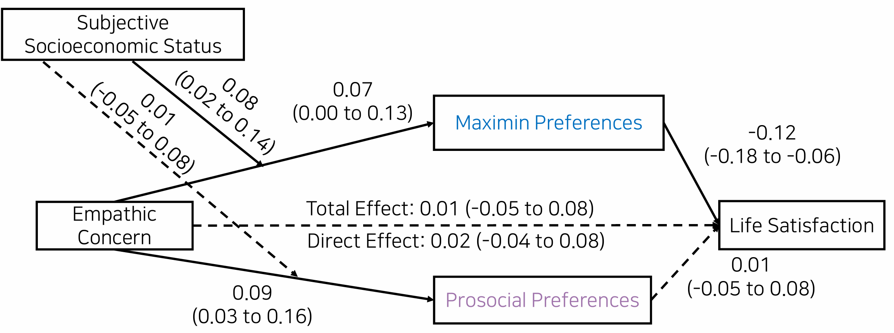

*This page is from English abstract of a paper published in Korean in the Journal of Social Science
Social preferences, which reflect how individuals consider the welfare of themselves and others,are closely related to happiness. In this study, we explore how empathy and social class interact in the relationship between happiness and social preferences, particularly prosocial preferencesand distributive justice preferences.
A nationally representative sample of South Korean adults completed online decision-making tasks and self-report measures of empathic concern, subjective status, and life satisfaction. Using economic utility models, participants’ preferences for distributive justice were quantified as maximin scores and prosocial preferences as social value orientation scores.

Results showed that empathic concern decreased life satisfaction via greater maximin preferences, and this indirect effect was moderated by subjective status-the association between empathic concern and maximin preferences was stronger among individuals with higher subjective status than those with lower status.
Although empathic concern positively predicted prosocial preferences, prosocial preferences were not significantly associated with life satisfaction, nor did they mediate the effect of empathic concern on life satisfaction or interact with subjective status.
Our study integrates the findings of previous research that individual preferences in social decision-making are influenced by empathy and predict happiness, and offers a novel explanation for the complex relationship between empathy and happiness.
Note: If you have any questions about this study, feel free to contact me!